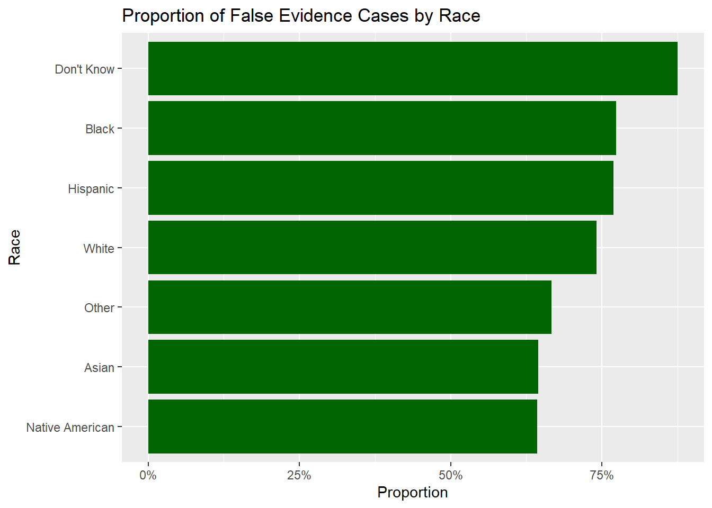

Our fourth blog post containing a more in depth analysis of the exoneration data set.
Author
Team 10 (Mango)
Published
March 31, 2025
In our previous blog posts, we established foundational insights from the National Registry of Exonerations dataset. We uncovered broad trends—for example, that Black exonerees are overrepresented, homicide dominates the dataset, and that DNA evidence and false confessions appear disproportionately in specific crimes.This week, we began moving from exploratory analysis to explanatory analysis. Rather than simply observing that disparities exist, we aimed to dig deeper: · What factors predict whether false evidence is involved in a case? · Do these factors vary by race or crime type? · Can we start to model these outcomes with statistical tools?
We focused this week’s exploratory analysis on the role of false evidence (including official misconduct, perjury/false accusation, and false confession). We wanted to understand how often this occurs, and whether it disproportionately affects certain racial groups or certain crime types. We created a new binary column, False_Evidence, defined as cases with any of the following tags: · OM (Official Misconduct) · P/FA (Perjury or False Accusation) · FC (False Confession) Using this, we calculated the proportion of exonerees within each racial group whose cases involved false evidence.
library(dplyr)
Attaching package: 'dplyr'
The following objects are masked from 'package:stats':
filter, lag
The following objects are masked from 'package:base':
intersect, setdiff, setequal, union
library(ggplot2)# Load the cleaned exoneration datasetexoneration_data <-readRDS(here::here("dataset", "exoneration_data_clean.rds"))# Create False_Evidence columnexoneration_data <- exoneration_data %>%mutate(False_Evidence =if_else(!is.na(`OM`) |!is.na(`P/FA`) |!is.na(`FC`), 1, 0))# Plot: False Evidence by Raceexoneration_data %>%group_by(Race) %>%summarize(FE_rate =mean(False_Evidence, na.rm =TRUE)) %>%ggplot(aes(x =reorder(Race, FE_rate), y = FE_rate)) +geom_col(fill ="darkgreen") +coord_flip() +labs(title ="Proportion of False Evidence Cases by Race",x ="Race", y ="Proportion") +scale_y_continuous(labels = scales::percent)

Figure 1 Insight: False Evidence Disparities by Race This chart shows the proportion of exonerees in each racial group whose cases involved false evidence—defined as the presence of official misconduct (OM), false confessions (FC), or perjury/false accusation (P/FA). · The highest proportion is found in the “Don’t Know” group, likely due to data entry uncertainty or legacy cases with incomplete documentation. · Among named racial groups, Black, Hispanic, and White exonerees all show relatively high proportions of false evidence cases—over 65% in each group. · Black exonerees have the highest known rate of false evidence involvement, slightly above Hispanic and White counterparts. This finding supports the hypothesis that racial disparities exist not only in wrongful convictions themselves but also in the mechanisms that cause them. · Asian, Native American, and “Other” groups show lower proportions, though these groups have smaller sample sizes, which may contribute to more variation or underreporting. Overall, this plot reinforces the importance of examining race as a structural factor influencing how and why wrongful convictions occur.
We also explored whether DNA evidence is more common in some types of crimes than others.
# Plot: DNA Evidence by Worst Crime Typeexoneration_data %>%mutate(DNA_binary =if_else(!is.na(DNA), 1, 0)) %>%group_by(Worst_Crime_Display) %>%summarize(Count =n(),DNA_Rate =mean(DNA_binary, na.rm =TRUE)) %>%arrange(desc(Count)) %>%top_n(12, Count) %>%ggplot(aes(x =reorder(Worst_Crime_Display, DNA_Rate), y = DNA_Rate)) +geom_col(fill ="steelblue") +coord_flip() +labs(title ="DNA Evidence Rate by Crime Type",x ="Crime Type", y ="Proportion with DNA Evidence") +scale_y_continuous(labels = scales::percent)
Figure 2 Insight: DNA Evidence Varies Strongly by Crime Type
This plot illustrates how the use of DNA evidence in exoneration cases differs significantly across crime types. · Sexual assault cases overwhelmingly stand out, with over 65% of cases involving DNA evidence. This is likely due to the nature of such crimes, where biological evidence plays a central role in both prosecution and exoneration. · Murder and manslaughter follow as the next highest categories, each with around 30–40% DNA involvement, reflecting their severity and the likelihood of forensic investigation. · Crimes such as fraud, drug possession, and weapon-related offenses show very low rates of DNA evidence, typically below 5%, indicating that wrongful convictions in these categories are more likely driven by non-forensic factors like false accusations, misidentification, or official misconduct. · There’s a clear distinction between violent crimes (with high DNA rates) and non-violent or administrative crimes (with low or no DNA involvement).
These differences highlight the importance of contextualizing wrongful conviction mechanisms by crime type, and suggest that forensic evidence plays a far greater role in rectifying wrongful convictions for violent offenses.
As we begin modeling, we outlined a list of potential response variables and predictors, along with possible transformations to improve interpretability and predictive power：
Potential Response Variables: Convicted / Exonerated – binary response (Yes/No) Posting Date / Date of Crime Year – can be used to compute “time to exoneration” or analyze trends over time Worst Crime Display – could be used as a categorical response for classification F/MFE (Female/Male False Evidence) – whether false evidence was involved (binary response)
Potential Predictor Variables: Age Race Sex State / County Type of Crime (Worst Crime Display) Date of Crime Year DNA / MWID / OM Tags
Possible Transformations: Binarize tags: turn tags like P/FA, DNA, MWID, etc. into separate binary columns (0 or 1) Compute sentence length: transform sentence text (“10 years”, “Life without parole”, etc.) into numeric values (e.g., Life = 99, or just flag it separately) Date differences: derive “time between conviction and posting”, or “time to exoneration” Group ages: create age groups (under 18, 18–25, 26–35, etc.) Simplify crimes: group crimes into broader categories (e.g., violent vs. non-violent)
Modeling Options: 1. Logistic Regression (binary outcomes) Predicting whether someone is exonerated (Yes/No) Predicting presence of DNA evidence or false evidence Predicting whether someone receives life sentence
Linear Regression (continuous outcomes) Predicting sentence length (in years)
Race: Being Black was significantly associated with higher odds of false evidence involvement (p = 0.027), controlling for other variables. Hispanic exonerees also showed a marginally significant effect (p ≈ 0.086). Other racial groups did not differ significantly from the reference category (likely Asian or Native American, depending on how factors were encoded).
Sex and Age: Male exonerees were significantly more likely to have false evidence involved in their case (p < 0.001).Older age was associated with slightly lower odds of false evidence (p = 0.015), though the effect size is small.
Crime Type: None of the crime types reached statistical significance. This may be due to multicollinearity or sparse data in many crime categories. Some estimates are unusually large or small with very high standard errors, suggesting overparameterization or poor category separation.
DNA and MWID Evidence: Interestingly, the presence of DNA evidence was negatively associated with false evidence (estimate = -0.454, p = 0.0007). This could suggest that cases involving false evidence may lack concrete forensic support.Mistaken witness identification (MWID) had the strongest negative association with false evidence (estimate = -1.72, p < 0.0001), which is intuitive—if a case hinges on mistaken ID, it may be less likely to also involve fabricated evidence.
Model Fit: The residual deviance decreased from 4005.5 to 3271.1, indicating improved fit. AIC = 3381.1, which can be used for model comparison later.